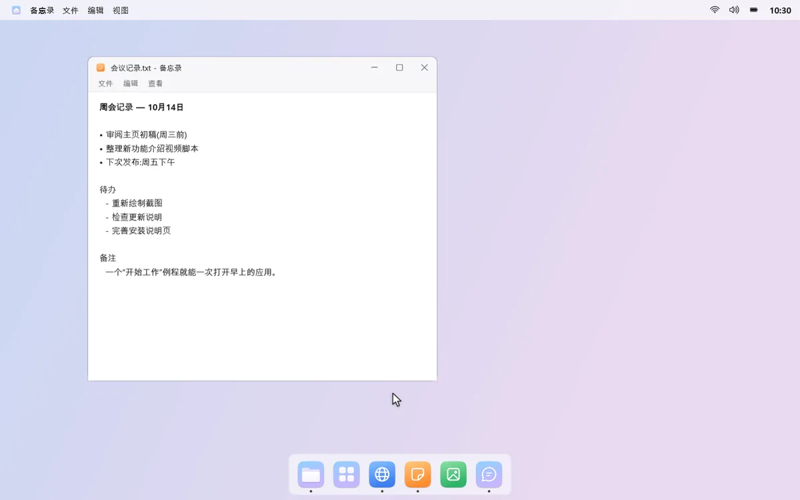
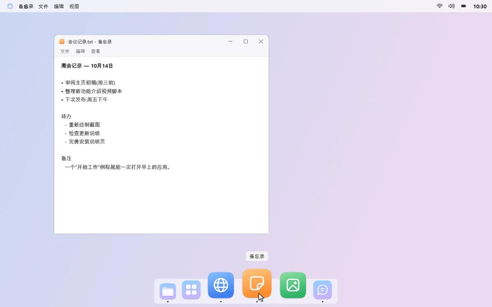
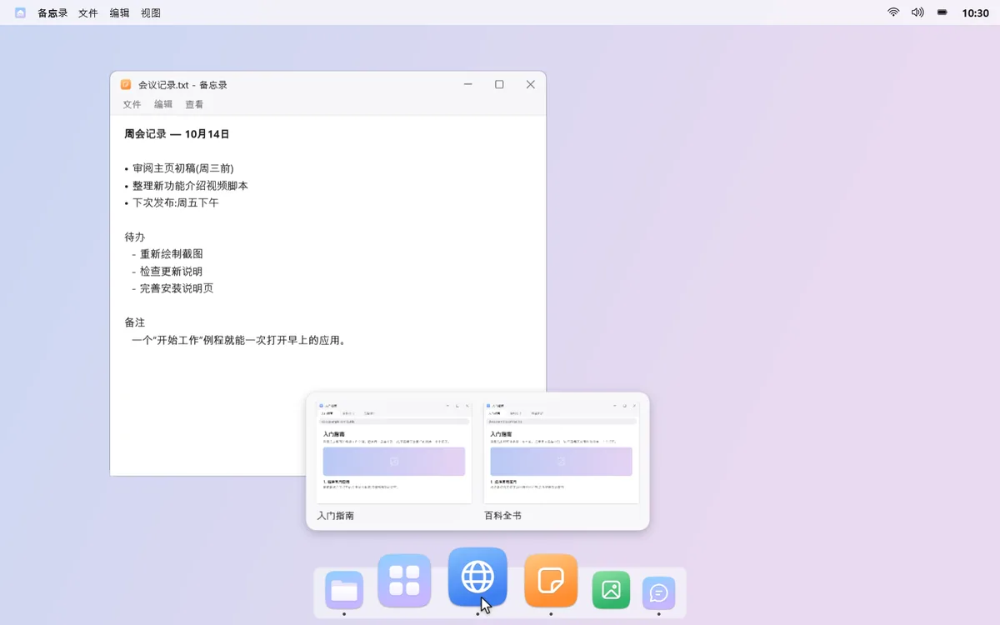
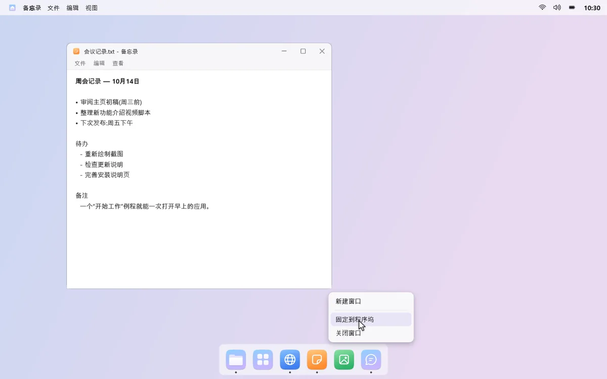
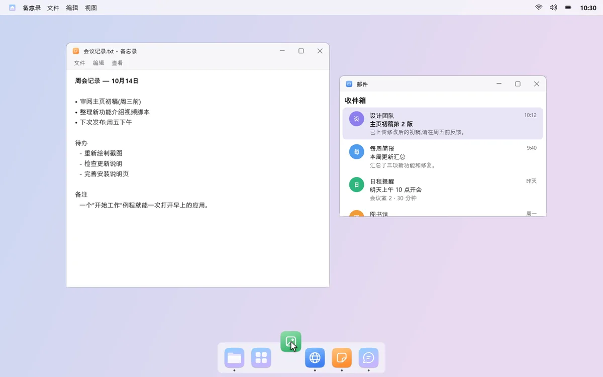
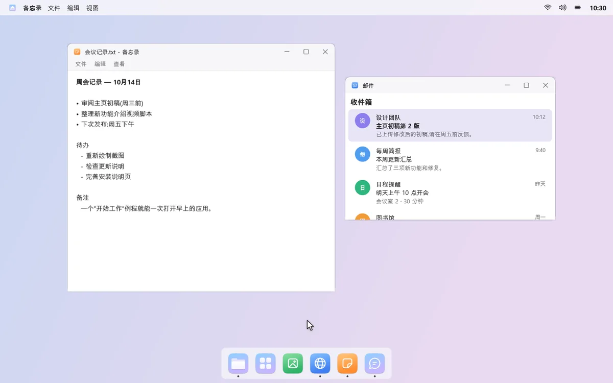
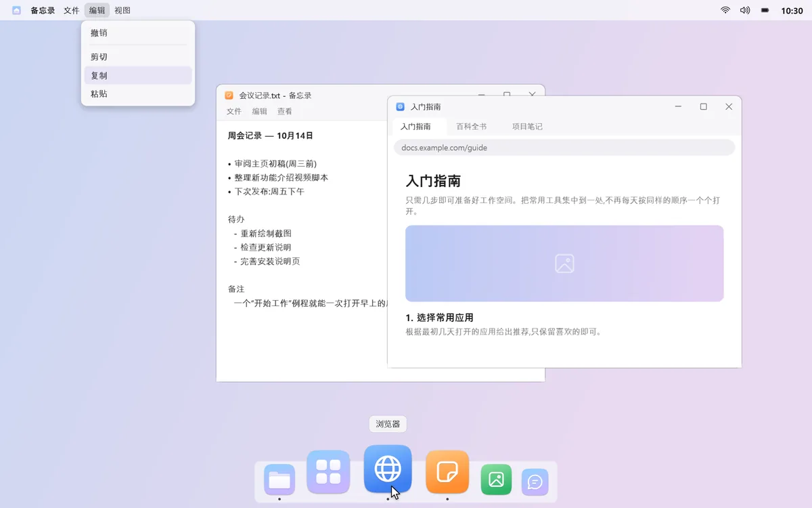

下方是启动和切换应用的程序坞，上方是汇集应用菜单、控制中心和日历的菜单栏。常一起打开的应用，用例程一键全部打开。
15 天免费试用全部功能，喜欢再一次性购买。无订阅，无广告。
Windows 11，或 Windows 10 2004 及更高版本 · x64 电脑

图标塞得满满的，要找的应用却不在。
音量、亮度、日历，各在不同的地方。
邮件、聊天、文档一个个打开，再一个个拖到位置上。
mongdock 帮你省去这些小麻烦。
应用使用记录、窗口标题、例程和通知内容只在这台电脑上使用。mongdock 不读取浏览器的地址栏和浏览记录。使用统计仅在你同意后发送，而且只有次数。
mongdock 只在运行时隐藏 Windows 任务栏。暂停或退出后，它就会回到原来的位置。
“卸载 mongdock…”会先恢复任务栏、自动隐藏和通知声音，再打开 Windows 的卸载页面。
免费试用 15 天